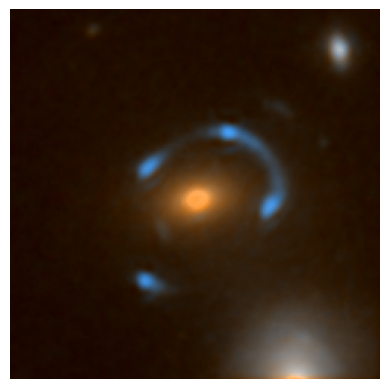
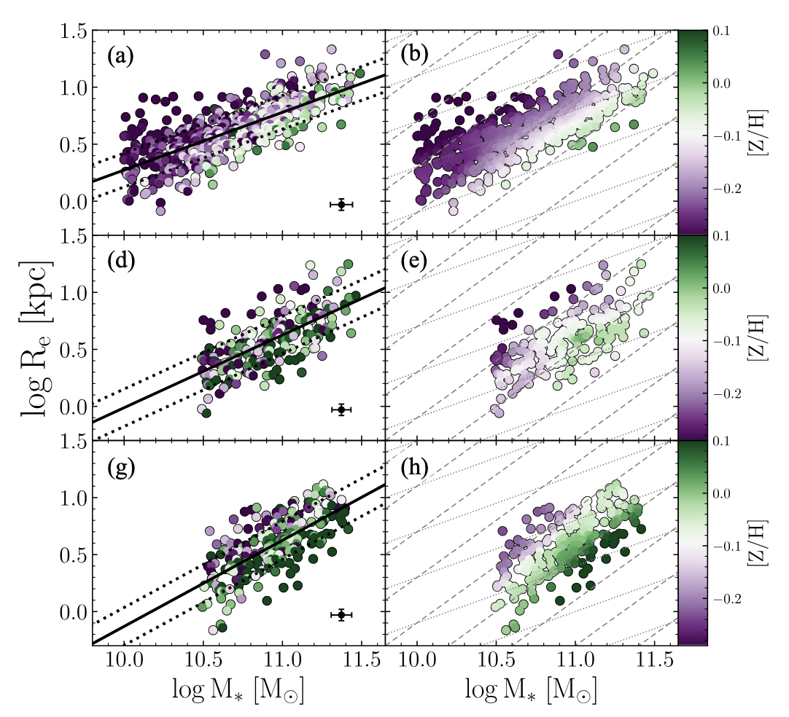
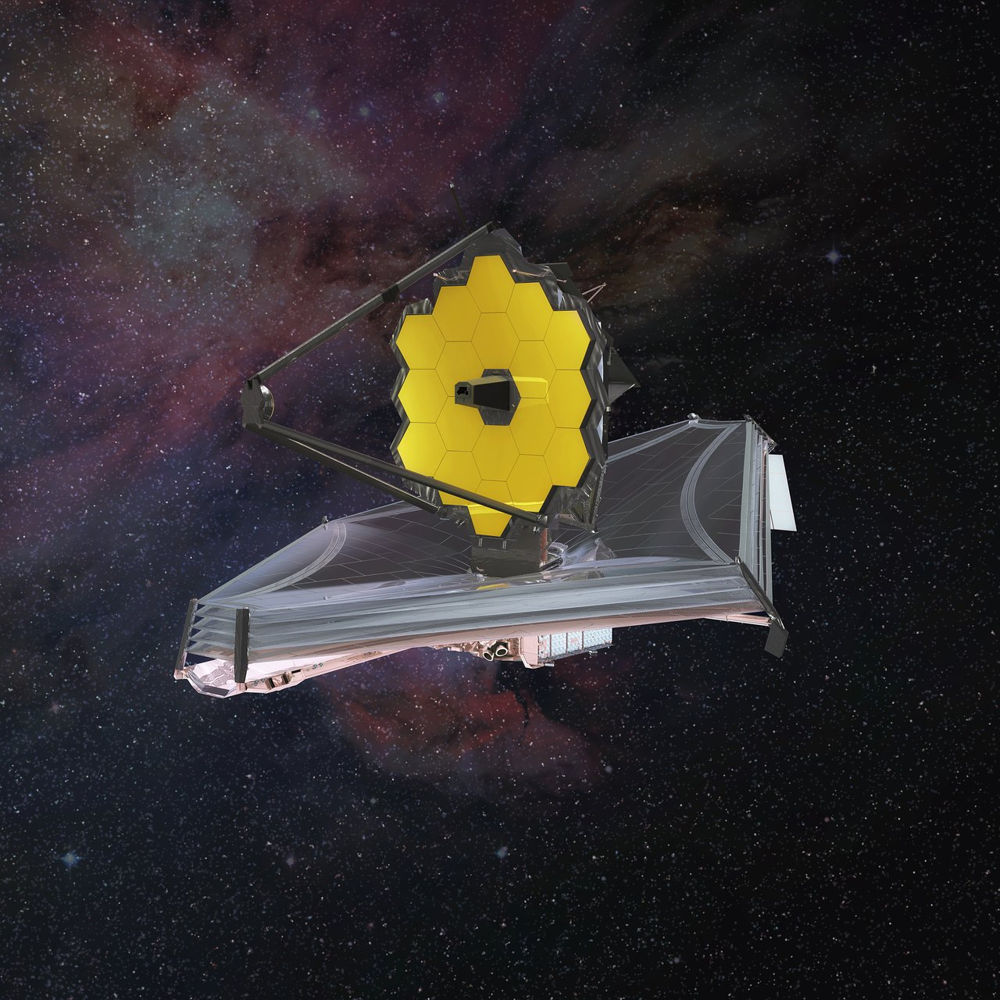
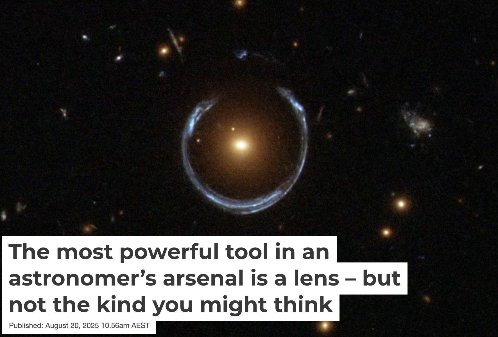
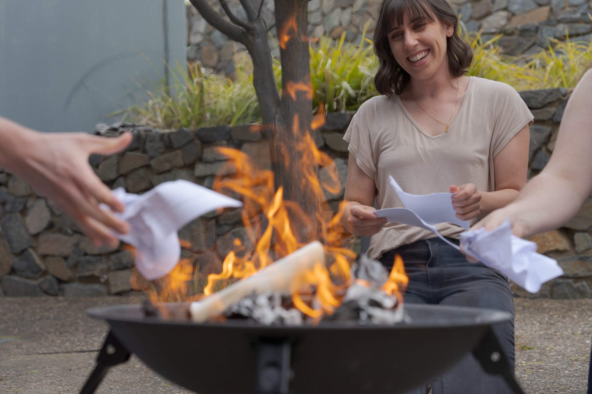
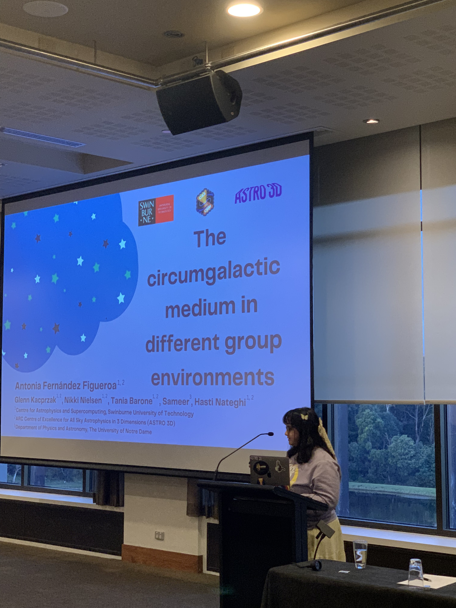

I research how galaxies evolve,
with a particular focus on the ends of their lives.
I use strong gravitational lenses to get highly magnified views of distant galaxies to illuminate elusive
aspects of our Universe. My research on galaxies includes studying their smallest, faintest stars as
well as probing the low-density diffuse gas surrounding them. I completed my PhD at the Australian
National University in 2021. I then worked as a researcher at Swinburne University of Technology,
before moving to my current role at the Harvard & Smithsonian Center for Astrophysics in 2025.
Selected Scientific Projects
A full list of my projects and publications can be found on the
NASA
Astrophysics Data System (ADS).
My PhD thesis, Links between Galaxy Structure and Stellar Populations (2022), can be found on the
Australian National University Library.
Leading a Collaborative Data Release
The ASTRO 3D Galaxy Evolution with Lenses (AGEL) Survey · Barone et al. (2026)

-
Leadership:
Deputy lead of a 50-person international collaboration;
led the survey's core data-release publication.
-
Scientific outcome:
Delivered a catalogue enabling studies of galaxy
evolution and cosmology.
-
Approach:
Combined imaging and spectroscopy to validate
gravitational-lens candidates identified by machine learning.
-
Validation:
Confirmed 96% of candidates observed in follow-up
and examined false positives to improve future searches.
-
Communication:
Talked about the AGEL survey and the data release on the American Astronomical Society's
Journal Author
YouTube series.
Using Gravitational Lensing to Uncover Hidden Gas
Probing the faint gas surrounding galaxies in the circumgalactic medium · Barone et
al.
(2024)

-
Leadership:
Led the study from conception to publication, including obtaining the observations from
the Keck Telescope on Mauna Kea.
-
Scientific outcome:
Detected substantial cool gas close to a galaxy with little ongoing star formation,
challenging
predictions that this region should be depleted of cool gas.
-
Approach:
Used light from a gravitationally lensed background galaxy to probe
otherwise hard-to-observe gas. Measured absorption signatures and
modelled the foreground galaxy's stellar population.
-
Validation:
Compared measurements across four lensed arcs and assessed how
assumptions about gas coverage affected the inferred gas quantities.
Lens modelling provided complementary evidence
for an asymmetric mass distribution.
Comparing Large Datasets Across Six Billion Years
The LEGA-C and SAMI galaxy surveys · Barone et al. (2022)

-
Scientific outcome:
Found that a galaxy's ability to retain metals is linked to the depth of its
gravitational potential.
The analysis also showed that the relationship between galaxy age and density developed
gradually as
the galaxy population evolved.
-
Approach:
Combined spectroscopy and structural measurements for 1,016 quiescent galaxies observed
at two
different periods in cosmic history. Used full-spectrum fitting to estimate stellar ages
and
metallicities.
-
Validation:
Accounted for differences between the surveys, tested alternative sample definitions and
modelling
assumptions, and propagated measurement uncertainty through Bayesian regression and
repeated
correlation analysis.
-
Communication:
Presented work at the ASTRO 3D Early Career Researchers Astronomers in Australia Seminar
Series
Teaching and Science Communication
Workshop and Teaching Materials
-

JWST Proposal Workshop
University of Sydney · September 2024
·
View workshop materials
Lecture material focused on the James Webb Space Telescope's (JWST) instruments and their
capabilities, as well as hands-on exercises using the tools required to submit a NASA
proposal including the Astronomer's Proposal Tool (APT) and the Exposure Time Calculator
(ETC). Workshop designed for astrophysics researchers of all career stages who are
interested in submitting proposals to use the new James Webb telescope.
-
JWST Data Reduction Workshop
Swinburne University of Technology · November 2025
·
View workshop materials
·
View GitHub repository
Hands-on workshop on working with JWST data, including retrieving observations from the
NASA archive,
the different file types and their associations, and using the Python data reduction
pipeline to produce
science-ready outputs. Workshop designed for early-career astrophysicists (PhD students
and postdoctoral
researchers) to gain practical experience working with JWST data.
-

High School Work Experience Week Program
Swinburne University of Technology · High School Work Experience Week
2022
·
View teaching materials
Week-long program for high school work experience students (year 10, ~16 years old)
designed to introduce students to a career in research. The program involved hands-on
activities such as analyzing real data to measure the distance to far away galaxies,
lecture material on a range of astrophysics topics, and interactive discussions to
foster critical thinking. Students also led a mini independent research project they
presented at the end of the week.
Public Writing
-

The Most Powerful Tool in an Astronomer's Arsenal Is a Lens—but
not the kind You might think
The Conversation · August 2025
·
Read article
A public introduction to gravitational lensing, explaining how
it reveals distant galaxies, dark matter and dark energy—and how
citizen science and AI will help identify lenses in future surveys.
-

The best words in the best order: why do our astronomy students burn their PhD thesis?
ANU College of Science and Medicine · December 2022
·
Read article
Featured in article written by Tabitha Carvan, explaining the tradition of Astrophysics
PhD Students at the Australian National University burning their thesis upon graduation.
Recorded Talks
-

AAS Journal Author Series: The AGEL Survey Data Release 2
American Astronomical Society · April 2026
·
Watch
video
An author interview about building and validating the AGEL gravitational-lens catalogue
and its uses
for galaxy evolution and cosmology.
-

When does the Initial Mass Function become Bottom-Heavy?
Center for Astrophysics | Harvard and Smithsonian · November 2024
·
Watch
video
A recorded research presentation delivered for the Institute for Theory and
Computation's luncheon
seminar series.
-

Stellar Populations and the Mass-Size Plane Across 7 Gyr
ASTRO 3D · June 2021
·
Watch
video
A research talk on using galaxy spectra and structural measurements to understand how
stellar
populations evolve over cosmic time.
-

Stellar Populations and the Mass-Size Plane Across 7 Gyr
Galspec Conference · April 2021
·
Watch
video
A specialist conference presentation on galaxy spectroscopy and stellar-population
analysis.
Supervision
-

Dr. Antonia Fernández Figueroa
Swinburne University of Technology · Graduated 2026
·
View thesis
Co-supervised thesis by publication studying the role of circumgalactic gas in galaxy
evolution.
Links and Contact Details
{kind=link}
{kind=link}